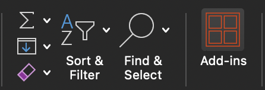
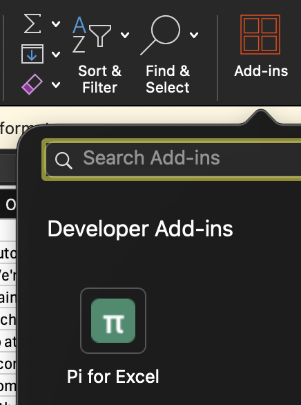
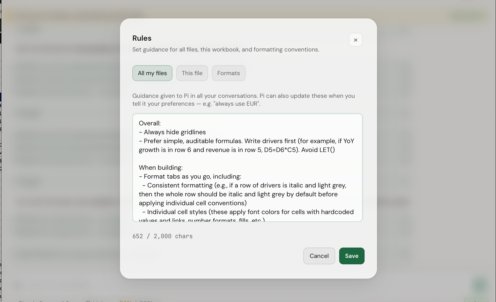

加载项在 Excel 右侧打开任务窗格，提供对话交互、16 个内置 Excel 工具、20+ 个斜杠命令、模型与上下文管理、扩展、集成、Python/tmux 桥等完整能力。本章逐项详解每个功能的作用、调用方式与典型场景。
加载项通过 Office 任务窗格（Task Pane）打开，自动停靠在 Excel 窗口右侧。点击 主页 → 加载项 → 联影AI_Base_PI 即可显示或隐藏。


显示当前工作簿名称、已连接 AI 提供商徽标、上下文用量百分比。点击 π 图标可快速打开模型选择器。
每个会话一个独立标签页。点击「+」新建，支持拖拽重排、右键关闭、按会话名称搜索。
用户消息与 AI 回复按时间顺序排列。AI 回复中的工具调用结果以可折叠卡片显示，原始 JSON 可展开查看。
多行文本框，支持 Enter 发送、Shift+Enter 换行。左侧下拉菜单可选择思考级别（低/中/高）。
右上角菜单包含：登录、设置、规则、扩展、工具、文件、帮助、调试等所有斜杠命令的图形入口。
当 AI 在推理时，会显示动态的「正在思考…」文本（取自 mitsuhiko 的 pi 扩展，针对财务/电子表格场景改写）。
任务窗格最小宽度约 280px，最大可占满屏幕 50%。侧边栏布局在窄窗口下会自动折叠工具调用结果，节省纵向空间。
任务窗格的核心是一个 Agent Loop：用户输入 → 自动注入上下文 → 模型推理 → 选择工具 → 执行 → 返回结果 → 继续推理 → 输出文本回复。整个循环对用户透明。
每次用户发送消息前，Agent 会自动注入三层上下文，无需用户手动描述当前状态：
| 注入项 | 内容 | 触发时机 |
|---|---|---|
| 工作簿结构蓝图 | 所有 sheet 名、命名范围、表格、图表、数据透视表、公式、单元格值预览 | 会话开始、工作簿切换、蓝图失效 |
| 当前选择 | 用户在 Excel 中选中的单元格地址和范围 | 每次用户消息（如有选择） |
| 最近变更 | 上次保存后本工作簿中发生的写入/格式/结构变更 | 每次用户消息（基于工作簿变更审计日志） |
工作簿蓝图只在结构变化时重新注入，避免每次请求都发送大量 token。单元格值/最近变更以"高信号"形式注入，确保模型始终知道"自己在看什么"。
| 场景 | 自然语言指令示例 | AI 会做什么 |
|---|---|---|
| 解读工作簿 | 解读此工作簿 |
调用 get_workbook_overview，通读所有 sheet，生成结构概述 + 用户使用手册 |
| 质量检查 | 质量检查此工作簿 |
扫描公式错误（#REF!、#VALUE!、#DIV/0! 等）、循环引用、断裂链接、数据异常值 |
| 财务模型 | 构建 DCF 估值模型 |
询问模型类型 → 写假设区 → 建立三表模型 → 添加敏感性分析 → 自动格式化 |
| 格式化 | 格式化此工作表 |
推断表头、数值、百分比、货币，应用 conventions + 字体/边框/数字格式 |
| 数据清洗 | 把 A 列的日期格式改为 YYYY-MM-DD |
读取 A 列 → 检测当前格式 → 批量转换 → 验证 |
| 公式生成 | 在 D2 写一个公式计算前三列的总和 |
写入 =SUM(A2:C2) → 可选 AutoFill 到整列 |
| 图表 | 用 B 列数据创建一个柱状图 |
读取 B 列 → 插入图表 → 命名 → 调整样式 |
| 公式解释 | 解释 D2 公式 |
调用 explain_formula，输出逐步推理 + 引用单元格说明 |
| 依赖追踪 | 追溯 D 列的公式依赖 |
调用 trace_dependencies，显示完整公式血缘（precedents） |
| 反向影响 | 改 A1 会影响哪些单元格 |
调用 trace_dependencies 的 dependents 方向 |
输入区左侧可切换三个思考级别，控制模型推理深度：
顶部状态栏右侧的百分比显示当前对话占用的 token 比例。当接近上限时：
40%：正常60%：开始警告88%：自动触发 /compact（详见第 07 节）100%：正常对话失败，必须先压缩或开新对话本地模型（如 Ollama 7B/13B）通常只有 32k–65k 上下文。请在 /settings → 自定义网关中准确填写"最大上下文 token 数"。该值驱动所有上下文预算（压缩阈值、工具输出截断、保留的工具结果数）。填错会导致请求失败。
Agent 通过调用 16 个内置工具来操作 Excel。这些工具由 src/tools/registry.ts 统一定义，是模型的"双手"。用户无需记住工具名，模型会自动选择合适的工具。
| 工具 | 分类 | 作用 |
|---|---|---|
get_workbook_overview |
read | 工作簿结构蓝图：所有 sheet、命名范围、表格、图表、透视表、公式、单元格值预览 |
read_range |
read | 读取单元格区域，支持三种模式：紧凑 markdown、CSV、详细（带格式） |
write_cells |
write | 写入值或公式，带覆盖保护和自动验证（写后再读回比对） |
fill_formula |
write | 将公式 AutoFill 到一个范围，相对引用自动调整 |
search_workbook |
read | 跨所有 sheet 搜索文本、值、公式引用 |
modify_structure |
mutate | 插入/删除行列，新增/重命名/删除/隐藏 sheet |
format_cells |
write | 应用格式：字体、颜色、数字格式、边框、命名样式 |
conditional_format |
write | 添加或清除条件格式规则 |
trace_dependencies |
read | 追溯公式血缘：上游 precedents 或下游 dependents |
explain_formula |
read | 用自然语言解释公式，附引用单元格说明 |
view_settings |
write | 网格线、标题、冻结窗格、标签颜色、sheet 可见性 |
comments |
write | 读取/添加/更新/回复/解决/重开单元格批注 |
workbook_history |
read | 列出/恢复自动保存前的中间备份（每次 mutation 前的快照） |
instructions |
write | 持久化的用户级和工作簿级指令（详见 第 09 节） |
conventions |
write | 配置格式化约定：货币符号、负数样式、零显示、小数位（详见 第 08 节） |
skills |
read | 读取、列出、安装、卸载 Agent Skills（详见 第 14 节） |
每个工具被分类为 read/none（只读）、write/content（修改值或格式）、mutate/structure（修改结构）。这一分类决定了：
每次 AI 调用工具时，主区会出现一张可折叠卡片：
用户说："质量检查此工作簿"时，AI 实际执行的工具链：
get_workbook_overview — 获取工作簿结构read_range × N — 逐 sheet 读取数据search_workbook — 搜索 #REF! / #VALUE! / #DIV/0! 等错误explain_formula — 对可疑公式做解释斜杠命令是加载项的图形界面之外的快捷入口。在输入框中输入 / 会弹出命令列表。所有命令也都可以通过右上角菜单访问。
| 命令 | 说明 |
|---|---|
/new | 在新标签页中开启新对话 |
/resume | 恢复历史会话（在新标签页中打开） |
/resume-here | 将历史会话恢复到当前标签页 |
/reopen | 重新打开最近关闭的标签页 |
/revert | 回滚到上一次的工作簿备份 |
/name | 为当前会话命名（便于在 /resume 中查找） |
/share-session | 将会话导出为可分享链接 |
| 命令 | 说明 |
|---|---|
/model | 打开模型选择器（也可点击状态栏的 π 图标） |
/login | 登录 AI 提供商（API 密钥或 OAuth） |
/settings | 打开设置面板：API 密钥、代理、自定义网关、YOLO 模式 |
/yolo | 切换 YOLO 模式（无确认直接执行 mutating 工具） |
| 命令 | 说明 |
|---|---|
/rules | 打开规则对话框（用户级 + 工作簿级指令） |
/conventions | 配置全局格式化约定 |
/shortcuts | 显示键盘快捷键 |
| 命令 | 说明 |
|---|---|
/backup | 创建/列出/恢复/清除手动全工作簿备份 |
/backup create | 创建完整 .xlsx 备份并下载 |
/backup list [N] | 列出最近 N 个备份（默认 10） |
/backup restore [id] | 恢复指定 ID 或最新备份 |
/backup clear | 删除当前工作簿的所有手动备份 |
/history | 打开 Backups 面板，查看自动检查点和手动备份 |
| 命令 | 说明 |
|---|---|
/export | 导出会话（JSON 文件到剪贴板或下载） |
/compact [focus] | 压缩上下文，可选 focus on ... 引导摘要方向（详见 第 07 节） |
| 命令 | 说明 |
|---|---|
/extensions | 打开扩展管理器（安装/启用/禁用/卸载） |
/plugins | 同 /extensions 的别名 |
/tools | 打开工具/集成管理器（Web 搜索 + MCP 服务器） |
/skills | 管理 Agent Skills |
/files | 打开 Files 工作区 |
| 命令 | 说明 |
|---|---|
/experimental | 打开实验性功能开关（远程扩展、桥接 URL、Python/tmux 桥令牌等） |
/debug | 查看调试信息（请求快照、缓存指标、prefix 变更） |
/clipboard | 将最近输出复制到剪贴板 |
模型选择器显示所有已连接提供商提供的模型，并按智能优先级排序。点击状态栏的 π 图标或输入 /model 打开。
| 提供商 | 优先级 |
|---|---|
| Anthropic | 最新 Fable → 最新 Sonnet（若版本 ≥ Opus）→ 最新 Opus |
| OpenAI / OpenAI Codex | 最新通用 gpt-5.x（若版本 ≥ Codex）→ 最新 Codex |
| Google（API 密钥） | 最新 gemini-*-pro 模型 |
| Google OAuth（gemini-cli / antigravity） | 稳定版 Gemini 优先于预览版 |
选中的模型会保存到本地存储，下次启动时自动恢复。在对话中途可以无缝切换模型（不会丢失对话历史），切换会触发一次新的请求。
thinking 参数如果某个模型连续几次输出质量不理想，可以立即切换到其他模型测试。模型选择器记忆最近使用的 3 个模型，便于快速切换。
每个工作簿支持多个并行会话，每个会话独立维护：
/new/name 新名称Ctrl+Tab / Ctrl+Shift+Tab/reopen 恢复/resume 打开选择对话框，列出所有历史会话每个会话的 sessionId 在整个生命周期内保持稳定。这是 prompt caching 的关键：
在会话内可以通过 /tools 切换该会话启用的集成（Web 搜索、MCP 服务器），不影响其他会话。状态栏会显示当前激活的集成徽标。
每个模型都有上下文窗口（Claude Opus 4.6 = 200k tokens，GPT-5 = 400k 等）。当对话过长时，请求会失败并显示 "prompt is too long" 错误。
/compact 是解决方案：用一段结构化摘要替换旧历史，只保留最近的内容。
加载项默认开启自动压缩（compaction.enabled = true），在以下三个时点自动触发：
在以下情况主动使用 /compact：
/compact focus on formulas and sheet namesfocus 参数会附加到摘要指令中，引导模型在摘要时重点关注指定方面。多次 compact 时，新的摘要会更新现有摘要（不会堆叠多个摘要）。
摘要消息有固定结构：
## Goal
[用户要达成的目标]
## Constraints & Preferences
- [用户提到的约束和偏好]
## Progress
### Done
- [x] [已完成的任务]
### In Progress
- [ ] [进行中的工作]
### Blocked
- [阻塞的问题]
## Key Decisions
- **[决策]**: [理由]
## Next Steps
1. [接下来要做的事]
## Critical Context
- [继续工作所需的关键信息]压缩会永久从会话中删除旧消息（摘要中捕获的内容除外）。如果需要完整记录，请在压缩前运行 /export。
对于本地 32k-65k 窗口的模型，压缩阈值会自动降低：
建议在 /settings → 自定义网关中准确填写"最大上下文 token 数"，这是所有预算的依据。
conventions 让你定义"家庭风格"，AI 在格式化时会自动遵循。在对话中输入 /conventions 或在加载项中打开设置 → 约定。
| 项目 | 选项示例 | AI 行为 |
|---|---|---|
| 货币符号 | $ / ¥ / € / £ / 自定义 |
将所有"金额"单元格应用 "$"#,##0.00 等格式 |
| 负数样式 | 括号 (123) / 减号 -123 / 红色 -123 |
写入负数时自动应用对应显示样式 |
| 零显示 | 显示 0 / 显示 - / 隐藏 |
写入 0 时应用 0;-0;;@ 等格式 |
| 小数位 | 0 / 2 / 4 位 | 数值单元格自动保留指定小数位 |
| 千分位 | 启用 / 禁用 | 应用 #,##0 或 #,##0.00 |
| 百分比样式 | 小数位、是否加粗 | 将比率识别为百分比 |
| 日期格式 | YYYY-MM-DD / MM/DD/YYYY / 自定义 |
所有日期列应用 |
设置：货币 = ¥，负数 = 红色括号，小数位 = 2
对 AI 说："把 Sheet1 收入表的所有数字按财务标准格式化"
AI 会调用 format_cells，自动应用：
"¥"#,##0.00;[Red]("¥"#,##0.00)0.00%YYYY-MM-DD这些约定是 工作簿级 的，存储在 IndexedDB 中。打开新工作簿时不会继承。
rules 让你给 AI 写"长期指令"，比单次对话的提示更持久。输入 /rules 打开规则对话框。

/rules 打开的规则对话框，支持用户级和工作簿级两类规则| 级别 | 作用域 | 存储 | 典型用途 |
|---|---|---|---|
| 用户级 | 所有工作簿 | 本机 IndexedDB（不会同步到其他设备） | "我更喜欢代码示例用 Python"、"回答用中文"、"简洁优先" |
| 工作簿级 | 当前工作簿 | 工作簿元数据 + IndexedDB 关联 | "这是季度报告"、"A 列是客户名"、"毛利率用 EBITDA 口径" |
用户级：
- 始终用中文回复
- 默认货币单位为人民币元
- 解释公式时引用所有相关单元格
- 不要修改已合并的单元格区域
工作簿级（DCF 模型）：
- 这是 AAPL 的 DCF 估值模型
- WACC 取 8.5%
- 终值增长率取 2.5%
- 终值用 Gordon Growth + Exit Multiple 两种方法交叉验证
- 敏感性分析表固定在 Sheet "Sensitivity"rules 与 conventions 会在每个请求的 system prompt 开头注入。这意味着：
加载项提供两层保护，应对不同的回滚需求。
每次 mutating 工具执行前，加载项会为受影响的单元格范围创建一份检查点。
使用方式：
/revert # 撤销最近一次写入
workbook_history tool call # 列出所有可恢复的检查点对高风险编辑，建议先创建完整 .xlsx 备份作为终极保险。输入 /backup：
| 子命令 | 作用 | 行为 |
|---|---|---|
/backup create |
创建完整备份 | 捕获工作簿为压缩 .xlsx，存入 Files workspace manual-backups/full-workbook/v1/<workbook-id>/<backup-id>.xlsx，同时下载到本地 |
/backup list [N] |
列出最近 N 个备份 | 显示备份 ID、创建时间、大小 |
/backup restore [id] |
恢复备份 | 下载 .xlsx 文件，由用户手动在 Excel 中打开（Office.js 没有可靠的原地替换 API） |
/backup clear |
删除所有手动备份 | 仅清除当前工作簿的备份，不影响其他工作簿 |
手动备份需要 Office document.getFileAsync("compressed", ...) 支持。某些旧版 Excel 或精简模式可能不支持，此时 /backup create 会失败并显示明确错误。
| 维度 | 自动检查点 | 手动完整备份 |
|---|---|---|
| 触发方式 | 自动（每次 mutating 工具前） | 手动 /backup create |
| 粒度 | 受影响单元格范围 | 完整工作簿 |
| 存储 | IndexedDB | Files workspace + 下载到本地 |
| 恢复方式 | 一键自动恢复 | 下载后手动在 Excel 中打开 |
| 适用场景 | 撤销几次小改动 | 高风险操作前的终极保险 |
| 建议 | 始终启用 | 重大修改前手动创建 |
扩展是用户可安装的"侧边栏小应用"，可以在对话中通过 /extensions 打开管理界面，或让 AI 自动安装：
创建一个名为 "Quick KPI" 的扩展，添加 /kpi-summary 命令，
读取活动 sheet 的数字列并显示一个小型 widget 汇总，
然后安装它。| 类型 | 安装方式 | 运行时 | 默认 |
|---|---|---|---|
| 本地模块 | 编程式（仓库内置） | host runtime（受信任） | 允许 |
| 粘贴代码 | /extensions → 安装代码 |
sandbox iframe（默认） | 允许 |
| 远程 URL | /extensions → 安装 URL |
sandbox iframe（默认） | 默认禁止，需 /experimental on remote-extension-urls |
| API | 作用 |
|---|---|
registerCommand | 注册斜杠命令 |
registerTool | 注册 AI 可调用的工具 |
connections.register / setSecrets | 声明和管理连接（密钥存储在主机端） |
agent.injectContext / steer / followUp | 影响主对话流 |
llm.complete | 宿主中介的 LLM 补全（独立侧会话） |
http.fetch | 宿主中介的出站 HTTP（带 connection 注入鉴权） |
storage.get / set / delete / keys | 扩展作用域的持久化 KV 存储 |
clipboard.writeText | 写入剪贴板 |
skills.list / read / install / uninstall | 访问 Agent Skills |
download.download | 触发浏览器下载 |
onAgentEvent | 订阅运行时事件 |
overlay.show / dismiss | 全屏覆盖层 |
widget.upsert / remove / clear | Widget API v2（/experimental on extension-widget-v2） |
toast | 显示短通知 |
扩展有 12+ 项能力权限（capability），高风险的有：
tools.register / agent.read / agent.events.readllm.complete / http.fetchagent.context.write / agent.steer / agent.followupskills.write / connections.readwrite / connections.secrets.read默认不强制执行能力门禁，需要 /experimental on extension-permissions 启用强制。启用后，每个权限变更会立即重新加载扩展。
粘贴代码和远程 URL 默认在 iframe 沙箱中运行，API 表面受限：
api.agent.raw（只能通过桥接的 injectContext/steer/followUp）innerHTML）data-pi-action 标记紧急回滚到主机运行时（仅供维护者）：/experimental on extension-sandbox-rollback。
export function activate(api) {
api.registerCommand("kpi-summary", {
description: "汇总活动 sheet 的数字列",
async handler() {
// 调用内置 read_range 工具
// 渲染 widget
const el = document.createElement("div");
el.textContent = "Total: 1,234,567";
api.widget.upsert({
id: "kpi-summary",
el,
title: "KPI 汇总",
placement: "above-input",
collapsible: true,
});
},
});
}集成是 Excel 运行时的可选工具包，扩展 AI 的能力。在对话中输入 /tools 打开集成管理。
这里说的是集成（integrations）——Excel 运行时开关，不是 Agent Skills。Skills 是基于 SKILL.md 标准的可移植制品（见 第 14 节）。
启用后 AI 可以调用 web_search 和 fetch_page 工具：
| 提供商 | API 密钥 | 说明 |
|---|---|---|
| Jina | 不需要（默认） | 开箱即用，无配置 |
| Serper.dev | 需要 | Google SERP 数据 |
| Tavily | 需要 | 针对 AI 优化的搜索 |
| Brave Search | 需要 | 独立的搜索索引 |
fallback 行为：如果配置的密钥提供商因认证/限流/网络错误失败，单次请求会自动回退到 Jina 并显示警告。
典型用法：
搜索一下苹果公司 2024 Q4 的营收
读取这个 URL 的内容：https://investors.apple.com/...
对比 Sheet1 中的 Q3 数据和最新季度的差异MCP（Model Context Protocol）让 AI 访问用户配置的外部 MCP 服务器。输入 /tools → MCP 标签页：
bearer token 存储在共享连接存储中（connections.store.v1），不会泄露到日志中。
外部工具由 external.tools.enabled 全局开关控制。关闭后所有外部集成工具都不会被 AI 调用，即使在 /tools 中启用。
外部请求可以直接发送，也可以经过现有的代理设置：
proxy.enabled = true）：通过 proxy.url 转发代理在 /settings → 代理中配置。联影AI_Base_PI 默认监听 https://localhost:3003 作为 CORS 代理。
桥是本地辅助服务，让 AI 在需要时执行 Python 代码、调用 LibreOffice、或在终端中运行命令。桥工具 python_run、libreoffice_convert、tmux 始终注册（保持稳定工具列表），但执行时受门控。
提供 3 个工具：
| 工具 | 作用 | 分类 |
|---|---|---|
python_run | 执行任意 Python 代码 | read |
python_transform_range | 读取范围 → 运行 Python → 写回结果 | write |
libreoffice_convert | LibreOffice 转换（xlsx↔pdf/csv） | read |
使用前提（每个有效桥 URL）：
/experimental python-bridge-url 或默认 https://localhost:3340）GET /health 成功fallback：当本地桥不可用时，python_run 和 python_transform_range 自动使用 Pyodide 在浏览器内执行（速度较慢但无需本地服务）。libreoffice_convert 没有 fallback，必须使用本地桥。
Real 模式要求：
python3 在 PATH 中（或设置 PYTHON_BRIDGE_PYTHON_BIN）soffice 或 libreoffice）仅 libreoffice_convert 需要npx UIH_AI-python-bridge --install-missing 辅助安装请求示例：
用 Python 对 Sheet1 的 A 列做 7 日移动平均，写入 C 列AI 会调用 python_transform_range：
POST https://localhost:3340/v1/python-run
{
"code": "import statistics; result = {'rows': [['', '', statistics.mean([float(x) for x in data[i-7+1:i+1] if x])] for i in range(len(data))]}",
"input_json": "{\"source\":\"Sheet1!A1:A100\"}",
"timeout_ms": 10000
}提供 tmux 工具，让 AI 在持久终端会话中执行命令（如 git 操作、build、test 脚本）。
使用前提：
https://localhost:3341）GET /health 返回成功Action 类型：
| Action | 必填字段 | 用途 |
|---|---|---|
list_sessions | — | 列出所有 tmux 会话 |
create_session | 可选 cwd | 创建会话 |
capture_pane | session, lines | 捕获输出 |
send_keys | session + (text | keys | enter=true) | 发送输入 |
send_and_capture | 同 send_keys | 发送并捕获 |
kill_session | session | 关闭会话 |
安全护栏：
127.0.0.1 / ::1）ALLOWED_ORIGINS）TMUX_BRIDGE_TOKEN）cwd 必须为绝对路径且存在-f /dev/null 和固定 socket 路径启动典型用法：
在 tmux 会话 build 中运行 npm test，等 30 秒后捕获输出Skills 是基于 agentskills.io 标准的可移植制品：SKILL.md 文件 + YAML frontmatter。可在不同 harness 间移植。
联影AI_Base_PI 内置的 Skills：
| Skill | 对应集成 | 工具 |
|---|---|---|
web-search | web_search | web_search, fetch_page |
mcp-gateway | mcp_tools | mcp |
tmux-bridge | — | tmux |
python-bridge | — | python_run, python_transform_range |
extending-pi | — | —（扩展开发指南） |
AI 通过 skills 工具按需加载 Skills（不一次性注入所有内容，节省 token）。system prompt 会包含 <available_skills> 列表。
用户可管理 Skills：
/skills 打开管理器skills/<name>/SKILL.mdskills/external/<name>/Files 面板（/files）提供统一的文件视图，按后端分类：
| 后端 | 何时使用 | 备注 |
|---|---|---|
| OPFS | 浏览器主机的默认后端 | Origin 私有文件系统，跨会话持久 |
| 本地目录 | 通过 File System Access API 连接时 | 显示双源：OPFS + 已连接目录 |
| 内存 | 非浏览器 / 测试环境 | 不持久 |
Files 工作区用于存储：
manual-backups/full-workbook/v1/...）.tool-output/...）skills/external/...）assistant-docs/，只读）在支持的浏览器中（Excel Online Chrome/Edge、桌面 Windows 的 WebView2），Files 面板会出现"连接文件夹"按钮：
不支持的主机（Firefox、Safari、macOS WKWebView）：按钮自动隐藏，UI 不会显示损坏的控件。
--install-missing）本章与主文档其他章节的关系：